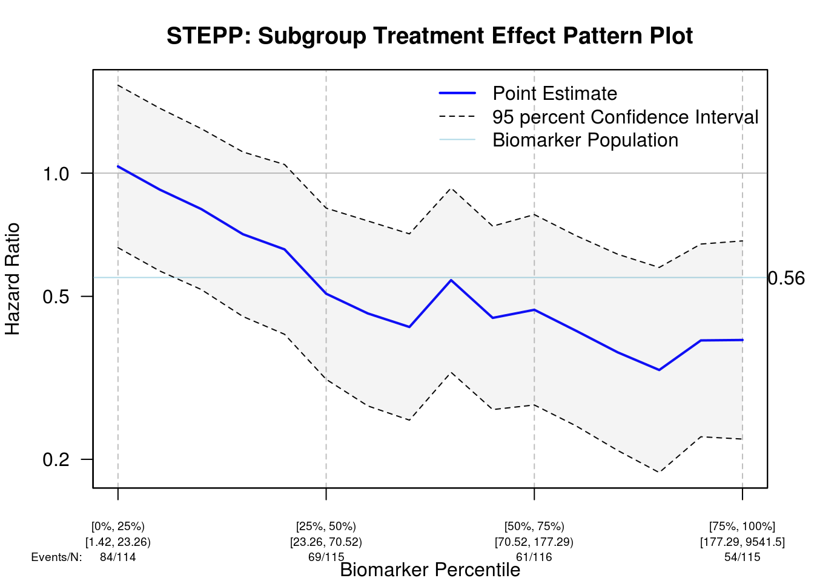
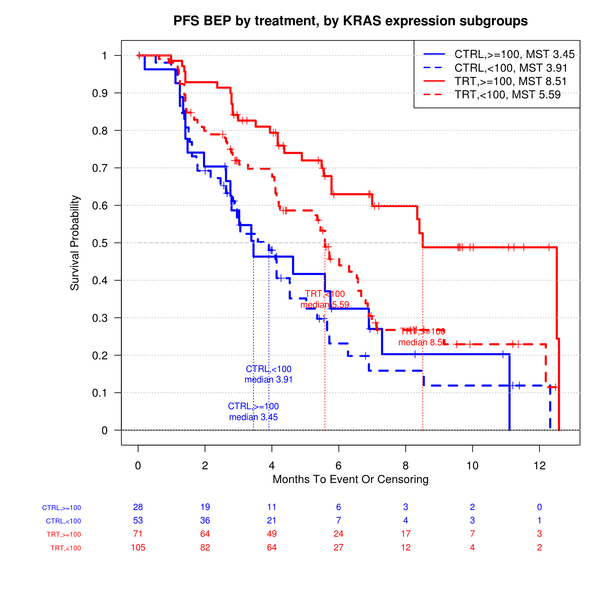
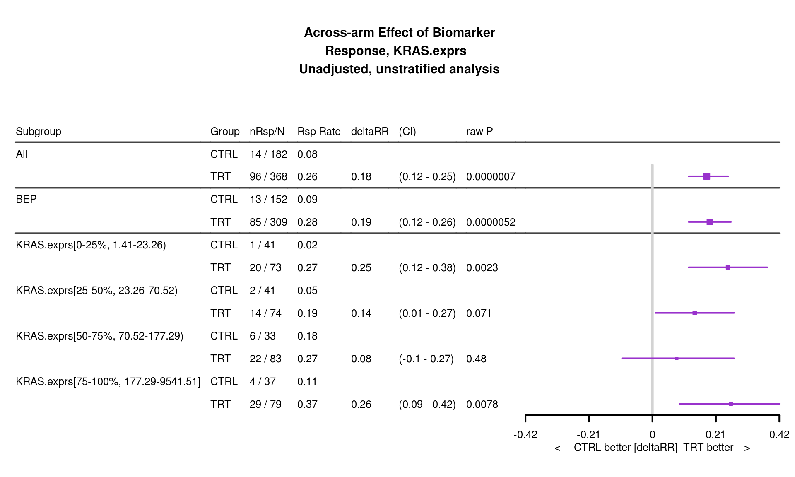
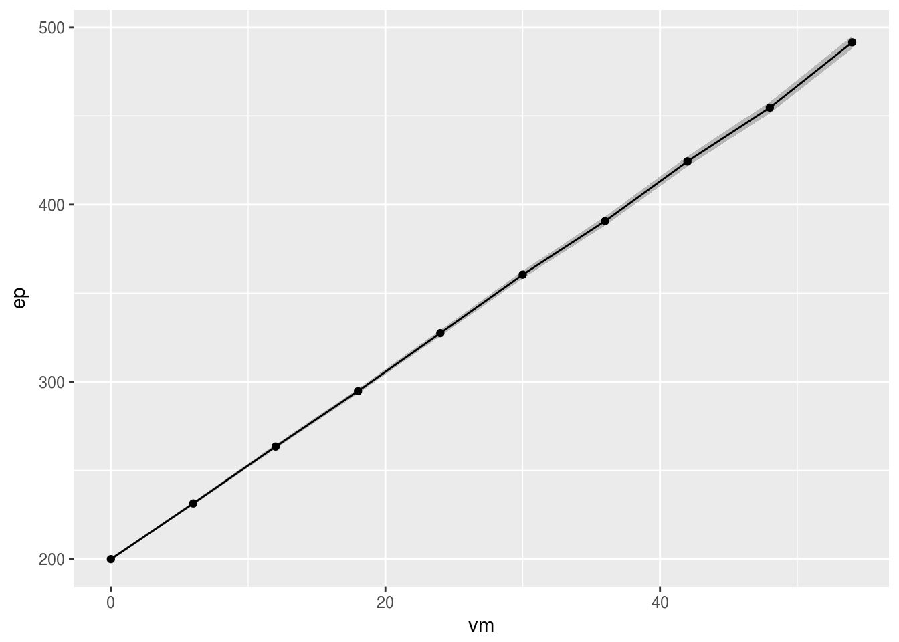
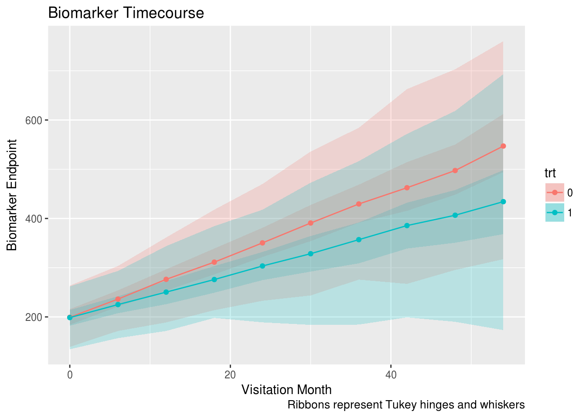
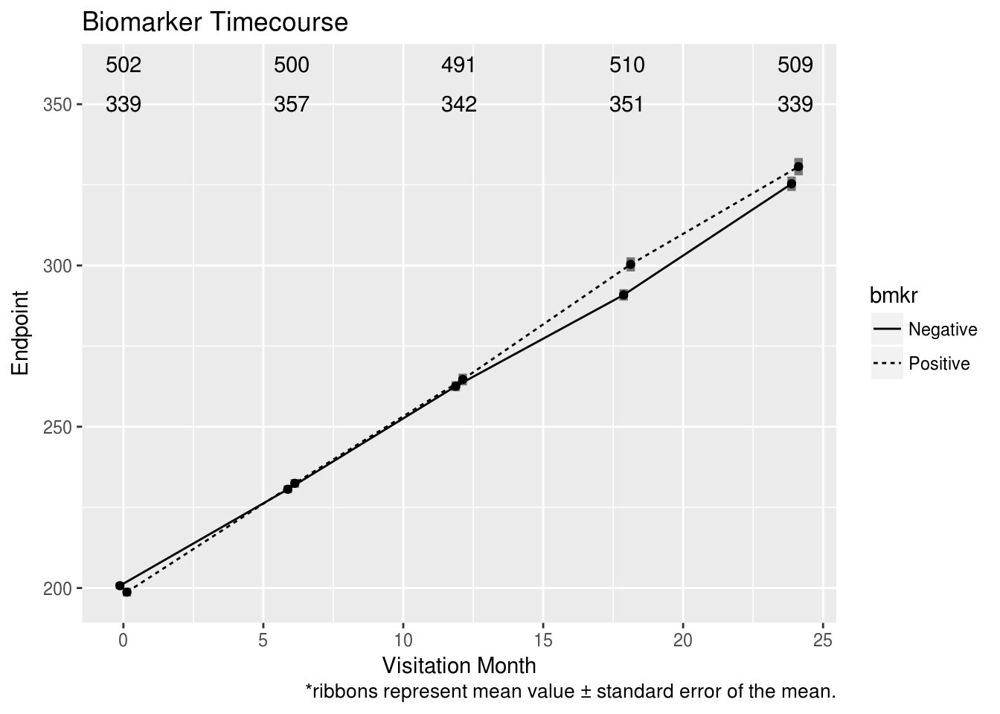
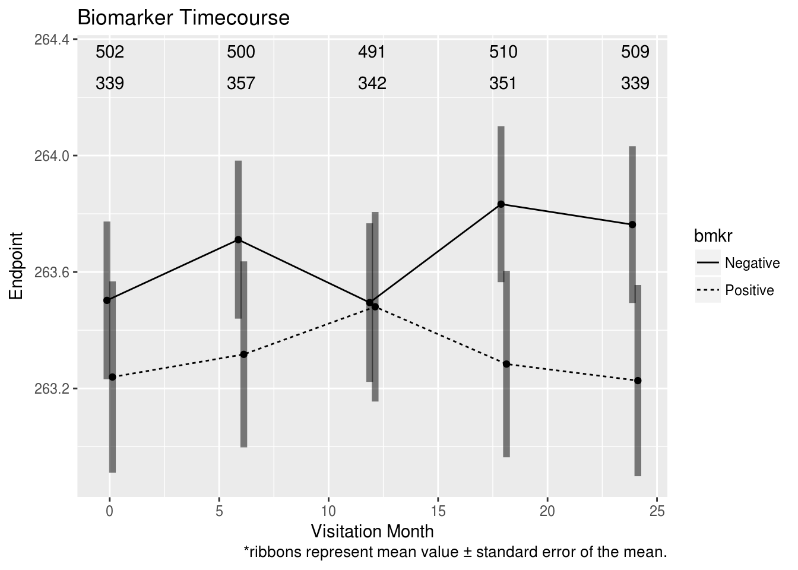

gClinBiomarker Vignette
Ning Leng, Alexey Pronin, Christina Rabe, Doug Kelkhoff, Kwame Okrah
2017-11-11
Overview
gClinBiomarker is an R package that allows users to easily perform biomarker analyses and generate high-quality figures and tables. It contains a set of functions covering essential biomarker analyses conducted in both oncology and non-oncology trials. It also provides an R markdown template that allows users to plug in their data set and generate a biomarker analysis report with “one-click”. The report contains demographics checking, biomarker property characterization, cutoff exploration (for continuous biomarkers), subgroup analysis, and longitudinal analysis. The package takes either VADs (AdAM) or a customized csv/data frame.
gClinBiomarker is built on top of the existing Baseline R package (biomarkers). The bulk of the work done on this package is on the back-end:
- streamline the original code,
- create robust documentation, and
- modularize the package for future extensions.
This vignette provides general guidelines of using gClinBiomarker package. Example workflows are also provided in the vignette, which cover essential biomarker analyses.
For advanced usage, more detailed examples can be found at:
The Rmarkdown templates can be found at:
https://github.roche.com/lengn/gClinbiomarker_documents/tree/master/Markdown_templates
Install and load the package
To install this package from R, use install_github() function from the devtools package
In R, type:
library(devtools)
install_github("RPackages/gClinBiomarker", host="https://github.roche.com/api/v3")Before analysis can proceed, the gClinBiomarker package must be loaded into the working space:
library(gClinBiomarker)Input
Input requirement
Functions in gClinBiomarkers package take data frame as the input format. In this data frame, clinical data and biomarker data should all be included as columns. Rows are samples.
If only baseline biomarker analysis will be performed, the data frame should have one patient per row, without duplicated entries for any patient.
If longitudinal analysis will be performed, one patient may have multiple enteries for multiple visits.
Functions and may also be used to read in data in csv format and sas7bdat format.
Example data set: baseline only
An example data set is included in the package:
head(input)## Patient.ID Sample.ID Arm Age Weight ECOG Sex Baseline.SLD Country
## 1 PID001 SID001 TRT 40 61.0 0 F 550.4970 Western Europe
## 2 PID002 SID002 TRT 60 87.0 1 F 549.7751 USA
## 3 PID003 SID003 TRT 53 57.6 1 M 548.8829 Western Europe
## 4 PID004 SID004 TRT 44 57.0 0 F 549.6050 USA
## 5 PID005 SID005 TRT 49 72.5 2 F 551.5498 Other
## 6 PID006 SID006 TRT 62 76.0 0 M 549.2565 Other
## CD8.ihc KRAS.mutant KRAS.exprs OS PFS Response BEP OS.event
## 1 3 Mutant 171.25 9.691992 5.782341 PR 1 0
## 2 2 Wild Type 2.77 4.435318 1.412731 PD 1 1
## 3 3 Wild Type 61.82 9.691992 1.215606 PD 1 0
## 4 1 Mutant 71.51 1.905544 1.905544 PD 1 0
## 5 NA <NA> NA 2.628337 2.628337 SD 0 1
## 6 2 Mutant 44.63 4.829569 4.139630 NON CR/PD 1 0
## PFS.event Lab_ontrt
## 1 0 28.993922
## 2 1 9.890427
## 3 1 26.896020
## 4 1 5.421392
## 5 1 14.741382
## 6 0 16.957035str(input)## 'data.frame': 550 obs. of 19 variables:
## $ Patient.ID : chr "PID001" "PID002" "PID003" "PID004" ...
## $ Sample.ID : chr "SID001" "SID002" "SID003" "SID004" ...
## $ Arm : Factor w/ 2 levels "CTRL","TRT": 2 2 2 2 2 2 2 2 2 1 ...
## $ Age : int 40 60 53 44 49 62 70 49 62 45 ...
## $ Weight : num 61 87 57.6 57 72.5 76 46 69.3 65 54 ...
## $ ECOG : int 0 1 1 0 2 0 0 1 0 1 ...
## $ Sex : chr "F" "F" "M" "F" ...
## $ Baseline.SLD: num 550 550 549 550 552 ...
## $ Country : Factor w/ 3 levels "Other","USA",..: 3 2 3 2 1 1 3 3 3 1 ...
## $ CD8.ihc : num 3 2 3 1 NA 2 NA 1 NA NA ...
## $ KRAS.mutant : Factor w/ 2 levels "Mutant","Wild Type": 1 2 2 1 NA 1 NA 2 NA NA ...
## $ KRAS.exprs : num 171.25 2.77 61.82 71.51 NA ...
## $ OS : num 9.69 4.44 9.69 1.91 2.63 ...
## $ PFS : num 5.78 1.41 1.22 1.91 2.63 ...
## $ Response : Factor w/ 6 levels "CR","NE","NON CR/PD",..: 5 4 4 4 6 3 4 3 4 6 ...
## $ BEP : num 1 1 1 1 0 1 0 1 0 0 ...
## $ OS.event : int 0 1 0 0 1 0 0 0 1 0 ...
## $ PFS.event : int 0 1 1 1 1 0 1 0 1 0 ...
## $ Lab_ontrt : num 28.99 9.89 26.9 5.42 14.74 ...The columns indicates:
- Patient.ID: patient ID
- Sample.ID: sample ID
- Arm: treatment arm
- Age: age (baseline clinical variable, continuous)
- Age: baseline body Age (baseline clinical variable, continuous)
- ECOG: ECOG (baseline clinical variable, ordinal)
- Sex: gender (baseline clinical variable, binary)
- Baseline.SLD: baseline SLD (baseline clinical variable, continuous)
- Country: region (baseline clinical variable, categorical)
- CD8.ihc: CD8 IHC measurement (biomarker, protein level, ordinal)
- KRAS.mutant: KRAS mutation status (biomarker, DNA level, binary)
- KRAS.exprs: KRAS gene expression (biomarker, mRNA level, continuous)
- OS: overall survival (clinical outcome)
- OS.event: censoring indicator for OS, 1 indicates event and 0 indicates censoring (clinical outcome)
- PFS: progression free survival (clinical outcome)
- PFS.event: censoring indicator for PFS, 1 indicates event and 0 indicates censoring (clinical outcome)
- Lab_ontrt: example continuous surrogate endpoint - on treatment lab data; one record per patient
- Response: best overall overall response (clinical outcome, ordinal)
- BEP: Biomarker evaluable population indicator. 1: in biomarker evaluable population, 2: not in. (When evaluable multiple biomarkers, we may want to take the same set of patients for all evaluations. Then the can be defined as the patients who have valid measurement for all biomarkers. In this example data set, the BEP is defined as patients who have CD8 IHC data, KRAS mutation data, and KRAS expression data. If only one biomarker is of interest, BEP could be defined as patients who have valid measure for this biomarker. A BEP column is required to perform certain analyses (e.g. selection bias examination of BEP).)
Biomarker workflow
Continuous biomarker in a two-arm study with survival outcome
We use PFS as our primary endpoint, KRAS.exprs as the biomarker of interest.
Representativeness: Selection Bias of Biomarker Population
In this section, we are trying to answer the question: Are biomarker evaluable population representative of the full population population?
Key baseline demographics and prognostic characteristics (including stratification variables and any variables with known prognostic effect) and efficacy outcomes should be summarized by treatment groups and compared between biomarker evaluable population (BEP) and the full population. These analyses are conducted to investigate any potential selection bias associated with the availability of the biomarker (e.g. we may not get enough tissue for patients whose tumor size is small. Therefore they may be exlcuded from BEP).
Check selection bias in terms of key clinical variables, between full population and BEP
Function can be used to perform selection bias checking of clinical variables. For example, if Age and Sex are two key clinical variables, we can perform the selection bias checking by:
SummaryVars(data=input, trt='Arm', subgroup='BEP', var=c('Sex','Age'),
var.class=c('categorical','numeric'))## All(CTRL) BEP(CTRL) All(TRT) BEP(TRT)
## Sex "" "" "" ""
## Total "182" "81" "368" "176"
## NA's "0" "0" "0" "0"
## F "89 (48.9%)" "39 (48.15%)" "184 (50%)" "90 (51.14%)"
## M "93 (51.1%)" "42 (51.85%)" "184 (50%)" "86 (48.86%)"
## Age "" "" "" ""
## N "182" "81" "368" "176"
## Mean "52.54" "53.1" "54.03" "54.42"
## Median "51.5" "52" "54" "54"
## Min-Max "27...85" "32...85" "30...89" "33...89"
## NA's "0" "0" "0" "0"function from knitr package may be used in Rmarkdown file for better table display:
kable(
SummaryVars(data=input, trt='Arm', subgroup='BEP', var=c('Sex','Age'),
var.class=c('categorical','numeric'))
)| All(CTRL) | BEP(CTRL) | All(TRT) | BEP(TRT) | |
|---|---|---|---|---|
| Sex | ||||
| Total | 182 | 81 | 368 | 176 |
| NA’s | 0 | 0 | 0 | 0 |
| F | 89 (48.9%) | 39 (48.15%) | 184 (50%) | 90 (51.14%) |
| M | 93 (51.1%) | 42 (51.85%) | 184 (50%) | 86 (48.86%) |
| Age | ||||
| N | 182 | 81 | 368 | 176 |
| Mean | 52.54 | 53.1 | 54.03 | 54.42 |
| Median | 51.5 | 52 | 54 | 54 |
| Min-Max | 27…85 | 32…85 | 30…89 | 33…89 |
| NA’s | 0 | 0 | 0 | 0 |
Here we specify the treatment column via parameter , and specify the BEP column via parameter . The comparision will be between BEP and the full population (BEP + nonBEP). If BEP vs. non BEP comparison is of interet, the user may specify parameter .
The clinical variables of interest can be specified via . Parameter can be used to specify class of the variable. Possible classes are “categorical”,“numeric”,“ordered.factor”. If var.class is not specified, the program will define the variable class based on class of the column (class()). Note that for ordinal variable whose levels are numbers, the column need to be converted to ordered factor. Otherwise it will be treated as continuous variable.
Check whether the clinical outcome in BEP is comparable to the full population
Function can be used to compare survival outcome in BEP vs. the full population:
CompareKM(data=input,tte='PFS', cen='PFS.event',trt='Arm', bep='BEP')By default, the KM curve and 95% CI will be plotted for each arm. The BEP KM curve is expected to be within the full population confidence bands.
Examine whether the prognostic/predictive/null trend of key clinical variables holds in BEP
Function PlotTanForestMulti may be used to examine whether any of the key clinical variables show predictive trend in BEP:
PlotTabForestMulti(data=input,
outcome.class="survival",
outcome.var=c("PFS","PFS.event"),
trt="Arm",
var=c("Sex","Weight"),
bep="BEP",bep.indicator=1, compare.bep.itt=TRUE
)From the plot above, we can see that variable Sex doesn’t show a predictive trend in full population (similar trt/ctrl HR in male and female group). However, in BEP the variable Sex has numerically smaller trt/ctrl HR in Male group. Although from the SummaryVars() result, the percentages of Male are comparable between full population and BEP, it is still possible that the male patients have better clinical outcome than the female group. This is likely due to some selection bias that we weren’t be able to capture in previous steps (e.g. unmeasured variable). In downstream analyses, if the biomarker subgroup also show a predictive effect, we will need to check that whether it is confounded by Sex.
Compare treatment effect estimation in full population and in BEP, adjusted for key clinical variables
Another important summary statistic to look at is the trt/ctrl (target/reference) HR in full population and trt/ctrl HR in BEP. Although highly overlapped curves in figures generated by CompareKM() function suggests that the unadjusted HR in full population and BEP will be comparable, it will be necessary to check adjusted HR as well. The following code chunk shows how to use the function CoxTab() to fit a multivariate Cox model by including treatment variable, Sex and Age.
input.bep <- subset(input, BEP==1) # dataset with only BEP samples
kable(
CoxTab(data=input,tte="PFS", cens="PFS.event", var='Arm',
var.class="categorical"),
caption="full population, unadjusted"
)| HR | CI.low | CI.high | p-value | n.trt | n.ref | |
|---|---|---|---|---|---|---|
| Arm (TRT/CTRL) | 0.54 | 0.43 | 0.67 | 7.8e-08 | 368 | 182 |
kable(
CoxTab(data=input,tte="PFS", cens="PFS.event", var=c('Arm','Sex',"Weight"),
var.class=c("categorical","categorical","numeric")),
caption="full population, adjusted for Sex, Weight"
)| HR | CI.low | CI.high | p-value | n.trt | n.ref | |
|---|---|---|---|---|---|---|
| Arm (TRT/CTRL) | 0.53 | 0.42 | 0.67 | 5.6e-08 | 368 | 182 |
| Sex (M/F) | 0.9 | 0.72 | 1.12 | 0.35 | 277 | 273 |
| Weight | 1 | 0.99 | 1 | 0.39 |
kable(
CoxTab(data=input.bep,tte="PFS", cens="PFS.event", var='Arm',
var.class="categorical"),
caption="BEP, unadjusted"
)| HR | CI.low | CI.high | p-value | n.trt | n.ref | |
|---|---|---|---|---|---|---|
| Arm (TRT/CTRL) | 0.49 | 0.36 | 0.69 | 3.1e-05 | 176 | 81 |
kable(
CoxTab(data=input.bep,tte="PFS", cens="PFS.event", var=c('Arm','Sex',"Weight"),
var.class=c("categorical","categorical","numeric")),
caption="BEP, adjusted for Sex, Weight"
)| HR | CI.low | CI.high | p-value | n.trt | n.ref | |
|---|---|---|---|---|---|---|
| Arm (TRT/CTRL) | 0.48 | 0.34 | 0.67 | 1.4e-05 | 176 | 81 |
| Sex (M/F) | 0.78 | 0.56 | 1.08 | 0.13 | 128 | 129 |
| Weight | 0.99 | 0.98 | 1 | 0.12 |
If any selection bias is suspected, the user may consider to stratify for the imbalanced factor in downstream analysis (e.g. unstratified analysis as primary analysis and stratified analysis as sensitivity analysis).
Biomarker property and its association to clinical variables
Before performing cutoff exploraotry analysis, it is important to check a biomarker’s property. For example, whether this biomarker has a bi-modal or multi modal distribution - if so, this biomarker may has natural cutoff.
Relationship between the biomarker and key demographic and prognostic variables should also be investigated using bivariate plots. Prognostic property of the biomarker should also be assessed, by estimates of the clinical efficacy in the control arm.
The function could be used to generate single variate plot for biomaker and clinical covariates. It can also be used to generate bi-variate plots to investigate biomarker-clinical variable relationship.
Biomarker property and relationship to clinical variable
PlotProperty(data=input, biomarker.var="KRAS.exprs", biomarker.class="numeric",
var=c("Sex", "Country"), var.class=c("categorical", "categorical"),
log2=TRUE, par.param = list(mfrow=c(2,3)))
Whether the biomarker show within-arm trend
Function can be used to investigate whether the biomarker shows within-arm trend:
input.ctrl <- subset(input, Arm=="CTRL") ## Data with only ctrl samples
res.multicut.ctrl <- PlotTabForestBiomarker(data=input.ctrl,
outcome.class="survival",
outcome.var=c("PFS","PFS.event"),
var="KRAS.exprs",
var.class="numeric",
percentile.cutoff=c(.25,.5,.75), main.prefix="CTRL",
greater=TRUE, less=FALSE)## Some NAs in var column, will define the non NA entries as BEP## only 1 arm; show.itt is set to FALSE## only 1 arm; show.bep is set to FALSEinput.trt <- subset(input, Arm=="TRT") ## Data with only trt samples
res.multicut.trt <- PlotTabForestBiomarker(data=input.trt,
outcome.class="survival",
outcome.var=c("PFS","PFS.event"),
var="KRAS.exprs",
var.class="numeric",
percentile.cutoff=c(.25,.5,.75), main.prefix="TRT",
greater=TRUE, less=FALSE)## Some NAs in var column, will define the non NA entries as BEP## only 1 arm; show.itt is set to FALSE## only 1 arm; show.bep is set to FALSE## Warning in par(old.par): calling par(new=TRUE) with no plotWe first get dataset input.ctrl and input.trt, which only contains patients in ctrl arm and trt arm, respectively. In function , time to event variable and censoring variable need to be specified via . The biomarker variable can be specified via . By specifying as and specifying TRUE+, the program calculates within-arm HR of biomarker >= 25% vs <25% group, biomarker >= 50% vs <50% group, and biomarker >= 75% vs <75% group.
In ctrl arm, patients who have expression >= 75% have slightly better PFS - >= 75% vs <75% HR is 0.83, and the median PFS is slightly higher in >= 75% group (4.73) vs <75% (3.45).
In trt arm, within-arm trend is seen in all three comparisons - for all 3 cutoffs, patients with higher expression have longer PFS than patients with low expression. The biomarker high vs. low HR are all around 0.5.
If strong within-arm effect is seen in both arms, the biomarker may be prognostic but not predictive.
If stratified or adjusted analyses are of interest, they can be specified via parameters and .
Seeking for predictive trend: Biomarker cutoff exploration/selection
Example codes in this section can be used to examine multiple candidate cutoffs for a continuous biomarker. The need for cut-off determination should be rooted in the development strategy. In general, an exhaustive search looking at all possible cut-off values is not recommended for decision making. Over-optimized cutoff using one set of clinical data may lead to hard-to-reproduce results. When determining a cutoff, biomarker property should be considered - e.g. cut at a low-dense point may be more robust to population shift. The cutoff selection should also fit the program’s stratigitic considerations. There is always a prevalence-effect size trade-off, inputs from multiple functions are needed - for example whether the team is willing to take more risk in PTS (high prevalence, weaker signal) or the team is willing to target at smaller population (lower prevalence, stronger signal)
Try different cutoffs - look for consistent trend
Function can also be used to investigate whether the biomarker is predictive across arm. To perform cross-arm analysis, parameter needs to be specified. By specifying ane , trt/ctrl HR of biomarker >= 25% group, biomarker >= 50% group, and biomarker >= 75% group are calculated:
res.multicut <- PlotTabForestBiomarker(data=input,
outcome.class="survival",
outcome.var=c("PFS","PFS.event"),
trt="Arm",
var="KRAS.exprs",
var.class="numeric",
percentile.cutoff=c(.25,.5,.75),
greater=TRUE, less=FALSE,
show.itt=TRUE, show.bep=TRUE)## Some NAs in var column, will define the non NA entries as BEPEstimations within non-overlapping bins
Function can also be used to calculate trt/ctrl HR within percentile bins. For example, by specifying , trt/ctrl HR of biomarker 0-25% group, 25-50% group, 50-75% group,and 75-100% group are calculated:
res.withinbin <- PlotTabForestBiomarker(data=input,
outcome.class="survival",
outcome.var=c("PFS","PFS.event"),
trt="Arm",
var="KRAS.exprs",
var.class="numeric",
percentile.cutoff=c(.25,.5,.75),
within.bin=TRUE,
show.itt=TRUE, show.bep=TRUE)## Some NAs in var column, will define the non NA entries as BEP## within.bin is TRUE, greater and less will be ignoredEstimations within overlapped sliding windows - STEPP plot
STEPP refers to Subgroup Treatment Effect Pattern Plot and it investigates relationship between biomarker and treatment effect. Only continuous biomarkers are suitable for STEPP analysis. STEPP performs treatment effect estimation on overlapping subsets of patients defined according to the biomarker level. The default setting of run.STEPP slides subgroup windows by 5% for each step and the subgroup size is 25% of the whole population.
A monotone trend is expected to be seen for an ideal biomarker.
stepp.out <- PlotSTEPP(data = input,
outcome.var = c("PFS", "PFS.event"),
outcome.class = "survival",
trt = "Arm",
var = "KRAS.exprs",
placebo.code = "CTRL",
active.code = "TRT"
) ## some NA in var column, will ignore NA entries
Here we can see the trt/ctrl HR decreases as the biomarker expression increases.
Biomarker subgroup analysis (using selected cutoff)
When a cutoff is selected, the following functions can be used to perfrom subgroups analysis. Suppose that we decided to use 100 as cutoff.
Estimations within each subgroup
function can again be used to estimate the treatment effect in biomarker subgroups. Here given that we have a numerical cutoff, it can be specified using parameter . And can be left as NULL.
res.subgroups.cut <- PlotTabForestBiomarker(data=input,
outcome.class="survival",
outcome.var=c("PFS","PFS.event"),
trt="Arm",
var="KRAS.exprs",
var.class="numeric",
percentile.cutoff=NULL,
numerical.cutoff=100, within.bin=TRUE,
show.itt=TRUE, show.bep=TRUE)## Some NAs in var column, will define the non NA entries as BEP## within.bin is TRUE, greater and less will be ignoredThis can also be done by converting the continuous marker to a binary variable:
input$KRAS.exprs.2group <- ifelse(input$KRAS.exprs >= 100, ">=100","<100")
input$KRAS.exprs.2group <- factor(input$KRAS.exprs.2group, levels=c(">=100","<100")) # ">=100" as Dx+
res.subgroups.bi <- PlotTabForestBiomarker(data=input,
outcome.class="survival",
outcome.var=c("PFS","PFS.event"),
trt="Arm",
var="KRAS.exprs.2group",
var.class="categorical",
show.itt=TRUE, show.bep=TRUE)## Some NAs in var column, will define the non NA entries as BEPKM curves
Function can be used to generate the KM curves of biomarker subgroups:
PlotKM(data=input, tte="PFS",cen="PFS.event", bep="BEP",
main="PFS BEP by treatment, by KRAS expression subgroups",
var=c("Arm","KRAS.exprs.2group"), legend.loc="topright",
plot.median=TRUE)## more than one elements in 'var', trt parameter will be ignored## 'varlist' is specified, trt and var parameters will be ignored
## [1] ""Check whether biomarker subgroup is confounded with key clinical variables
Functions and can again be used to check whether the biomarker subgroup is confounded with clinical variable. Using sex variable as an exmaple, instead of checking whether the F/M percentage is comparable in the full population vs. BEP, here we check the F/M percentage is comparable in biomarker high and low group. To perform such analysis we can specify as , and specify . By doing so the program will compare the “>=100” group vs. others.
input.bep <- subset(input, BEP==1)
kable(
SummaryVars(data=input.bep,trt='Arm', subgroup='KRAS.exprs.2group', var=c('Sex'),
var.class="categorical", subgroup.indicator=">=100",compare.subgroup=TRUE, subgroup.name="exprs")
)| exprs_>=100(CTRL) | exprs_<100(CTRL) | exprs_>=100(TRT) | exprs_<100(TRT) | |
|---|---|---|---|---|
| Sex | ||||
| Total | 28 | 53 | 71 | 105 |
| NA’s | 0 | 0 | 0 | 0 |
| F | 15 (53.57%) | 24 (45.28%) | 36 (50.7%) | 54 (51.43%) |
| M | 13 (46.43%) | 29 (54.72%) | 35 (49.3%) | 51 (48.57%) |
function could be used to look at treatment effect in smaller subgroups defined by both biomarker and clinical variables. For example, if we are interested in the trt/ctrl HR in following groups: biomarker high Male; biomarker high female; biomarker low male; biomarker low female, etc. We may specify as the biomarker variable, and as the clinical variables of interest. By setting and , the program will calculate the summary statistics within each subgroup. For numerical clinical variable, it will be dichotomized by its median.
res.subgroup.cov <- PlotTabForestMulti(data=input,
outcome.class="survival",
outcome.var=c("PFS","PFS.event"),
trt="Arm",
var=c("Sex","Weight"),
compare.bep.itt=FALSE,
compare.subgroup=TRUE,
subgroup="KRAS.exprs.2group"
)In this case, no treatment effect difference is observed between the Female vs. Male subgroups (as well as weight high & low).
Continuous biomarker in a single-arm study with survival outcome
We generate a data set with only patients from the treatment arm to mimic the case of single arm study:
input.trt <- subset(input, Arm=="TRT")We use PFS as primary endpoint, KRAS.exprs as biomarker of interest. We only take the treat
Representativeness: Selection Bias of Biomarker Population
Check selection bias in terms of key clinical variables, between the full population and BEP
kable(
SummaryVars(data=input.trt, trt=NULL, subgroup='BEP', var=c('Age','Sex'),
var.class=c('numeric','categorical'))
)| All | BEP | |
|---|---|---|
| Age | ||
| N | 368 | 176 |
| Mean | 54.03 | 54.42 |
| Median | 54 | 54 |
| Min-Max | 30…89 | 33…89 |
| NA’s | 0 | 0 |
| Sex | ||
| Total | 368 | 176 |
| NA’s | 0 | 0 |
| F | 184 (50%) | 90 (51.14%) |
| M | 184 (50%) | 86 (48.86%) |
Check whether the clinical outcome in BEP is comparable to the full population
CompareKM(data=input.trt,tte='PFS', cen='PFS.event',trt=NULL, bep='BEP')Examine whether the prognostic/null trend of key clinical variables holds in BEP
PlotTabForestMulti(data=input.trt,
outcome.class="survival",
outcome.var=c("PFS","PFS.event"),
trt=NULL,
var=c("Sex","Weight"),
bep="BEP",bep.indicator=1, compare.bep.itt=TRUE
)Age is a prognostic factor in both the full population and BEP. Sex show stronger prognostic trend in BEP, but not in the full population.
input.trt.bep <- subset(input.trt, BEP==1) # dataset with only BEP samples
kable(
CoxTab(data=input.trt,tte="PFS", cens="PFS.event", var=c('Sex',"Weight"),
var.class=c("categorical","numeric")),
caption="the full population, model of Sex, Weight"
)| HR | CI.low | CI.high | p-value | n.trt | n.ref | |
|---|---|---|---|---|---|---|
| Sex (M/F) | 0.91 | 0.69 | 1.2 | 0.49 | 184 | 184 |
| Weight | 1 | 0.99 | 1 | 0.33 |
kable(
CoxTab(data=input.trt.bep,tte="PFS", cens="PFS.event", var=c('Sex',"Weight"),
var.class=c("categorical","numeric")),
caption="BEP, model of Sex, Weight"
)| HR | CI.low | CI.high | p-value | n.trt | n.ref | |
|---|---|---|---|---|---|---|
| Sex (M/F) | 0.7 | 0.46 | 1.06 | 0.09 | 86 | 90 |
| Weight | 0.99 | 0.97 | 1 | 0.094 |
Biomarker property and association with clinical variables
PlotProperty(data=input.trt, biomarker.var="KRAS.exprs", biomarker.class="numeric",
var=c("Sex", "Country"), var.class=c("categorical", "categorical"),
log2=TRUE, par.param = list(mfrow=c(1,2)))

Biomarker cutoff exploration/selection
Try different cutoffs - look for consistent trend
res.multicut <- PlotTabForestBiomarker(data=input.trt,
outcome.class="survival",
outcome.var=c("PFS","PFS.event"),
trt=NULL,
var="KRAS.exprs",
var.class="numeric",
percentile.cutoff=c(.25,.5,.75),
greater=TRUE, less=FALSE,
show.itt=FALSE, show.bep=FALSE)## Some NAs in var column, will define the non NA entries as BEPWithin-bin analysis and STEPP are not available in single-arm analysis.
Biomarker subgroup analysis (using selected cutoff)
Subgroup analysis
Suppose the proposed cutoff is 100
res.subgroups.cut <- PlotTabForestBiomarker(data=input.trt,
outcome.class="survival",
outcome.var=c("PFS","PFS.event"),
trt=NULL,
var="KRAS.exprs",
var.class="numeric",
percentile.cutoff=NULL,
numerical.cutoff=100,
greater=TRUE,less=FALSE,
show.itt=FALSE, show.bep=FALSE)## Some NAs in var column, will define the non NA entries as BEPThis can also be done by converting the continous marker to a binary variable
input.trt$KRAS.exprs.trt.2group <- ifelse(input.trt$KRAS.exprs >= 100, ">=100","<100")
input.trt$KRAS.exprs.2group <- factor(input.trt$KRAS.exprs.2group, levels=c(">=100","<100")) # ">=100" as Dx+
res.subgroups.bi <- PlotTabForestBiomarker(data=input.trt,
outcome.class="survival",
outcome.var=c("PFS","PFS.event"),
trt=NULL,
var="KRAS.exprs.trt.2group",
var.class="categorical",
show.itt=FALSE, show.bep=FALSE)## Some NAs in var column, will define the non NA entries as BEPKM curves
PlotKM(data=input.trt, tte="PFS",cen="PFS.event", bep="BEP",
main="PFS in BEP, by KRAS expression subgroups, single arm",
var=c("KRAS.exprs.trt.2group"), legend.loc="topright",
plot.median=TRUE)## [1] ""Check whether biomarker subgroup is confounded with clinical variables
input.trt.bep <- subset(input.trt, BEP==1)
kable(
SummaryVars(data=input.trt.bep,trt=NULL, subgroup='KRAS.exprs.2group', var=c('Sex'),
var.class="categorical", subgroup.indicator=">=100",compare.subgroup=TRUE, subgroup.name="exprs")
)| exprs_>=100 | exprs_<100 | |
|---|---|---|
| Sex | ||
| Total | 71 | 105 |
| NA’s | 0 | 0 |
| F | 36 (50.7%) | 54 (51.43%) |
| M | 35 (49.3%) | 51 (48.57%) |
Categorical biomarker with survival outcome
Two-arm study
Analyses in section 4.1 can also be applied to categorial biomarker, except the cutoff exploration part (section 4.1.3).
For example, for categorical biomarker KRAS.mutant, the subgroup analysis can be performed using the function:
res.subgroups.cat <- PlotTabForestBiomarker(data=input,
outcome.class="survival",
outcome.var=c("PFS","PFS.event"),
trt="Arm",
var="KRAS.mutant",
var.class="categorical",
show.itt=TRUE, show.bep=TRUE)## Some NAs in var column, will define the non NA entries as BEPThe forest plot above provides HR estimates across two arms
Single-arm study
Similarly, most functions in section 4.2 can be applied to categorical biomarker analysis (except the cutoff exploration part in section 4.2.3). For example, taking the data set which only contains patients from treatment arm:
res.subgroups.cat <- PlotTabForestBiomarker(data=input.trt,
outcome.class="survival",
outcome.var=c("PFS","PFS.event"),
trt=NULL,
var="KRAS.mutant",
var.class="categorical")## Some NAs in var column, will define the non NA entries as BEP## only 1 arm; show.itt is set to FALSE## only 1 arm; show.bep is set to FALSECategorical outcome (e.g. response)
Check selection bias in terms of key clinical variables, between full population and BEP
Majority of functions from section 4.1.1 can be directly applied on analyses of categorical endpoints.
Function in section 4.1.1 can still be used to perform selection bias checking of clinical variables. To check whether clinical outcome in BEP is comparable to the full population, user can use function when the clinical outcome is response assessment. The parameter may be used to define order of the levels.
Rsp.out <- PlotRspBar(data=input, outcome.var="Response", binary=FALSE,
rsp.levels=c("CR", "PR","SD","NON CR/PD", "PD","NE"),trt="Arm",
compare.bep.itt=TRUE, bep = "BEP")## entries with missing outcome.var are removed! 524 entries leftThe summary statistics can be obtained by:
kable(Rsp.out$count,caption="count")| CR | PR | SD | NON CR/PD | PD | NE | |
|---|---|---|---|---|---|---|
| Full:CTRL | 0 | 14 | 64 | 22 | 58 | 1 |
| Full:TRT | 6 | 90 | 145 | 49 | 74 | 1 |
| Full:All | 6 | 104 | 209 | 71 | 132 | 2 |
| BEP:CTRL | 0 | 10 | 30 | 7 | 30 | 0 |
| BEP:TRT | 4 | 41 | 72 | 27 | 31 | 0 |
| BEP:All | 4 | 51 | 102 | 34 | 61 | 0 |
kable(round(Rsp.out$perc,2), caption="percentage")| CR | PR | SD | NON CR/PD | PD | NE | |
|---|---|---|---|---|---|---|
| Full:CTRL | 0.00 | 0.09 | 0.40 | 0.14 | 0.36 | 0.01 |
| Full:TRT | 0.02 | 0.25 | 0.40 | 0.13 | 0.20 | 0.00 |
| Full:All | 0.01 | 0.20 | 0.40 | 0.14 | 0.25 | 0.00 |
| BEP:CTRL | 0.00 | 0.13 | 0.39 | 0.09 | 0.39 | 0.00 |
| BEP:TRT | 0.02 | 0.23 | 0.41 | 0.15 | 0.18 | 0.00 |
| BEP:All | 0.02 | 0.20 | 0.40 | 0.13 | 0.24 | 0.00 |
To plot counts instead of percentage, one can specify the parameter to TRUE:
PlotRspBar(data=input, outcome.var="Response", binary=FALSE,
rsp.levels=c("CR", "PR","SD","NON CR/PD", "PD","NE"),trt="Arm",
compare.bep.itt=TRUE, bep = "BEP", plot.count=TRUE)## entries with missing outcome.var are removed! 524 entries leftTo summarize the response into two classes - responder vs. non-responder, user may set the parameter to TRUE. Parameter () can be used to define levels to be considered as responder (non-responder). Patients whose response outcome don’t fall into these defined levels will be elminated from the analysis.
Rsp.out.2 <- PlotRspBar(data=input, outcome.var="Response", binary=TRUE,
rsp.response = c("CR","PR"),
rsp.nonresponse = c("SD", "PD","NON CR/PD","NE"),trt="Arm",
compare.bep.itt=TRUE, bep = "BEP")## entries with missing outcome.var are removed! 524 entries leftThe summary statistics can be obtained by:
kable(Rsp.out.2$count,caption="count")| Rsp | non-Rsp | |
|---|---|---|
| Full:CTRL | 14 | 145 |
| Full:TRT | 96 | 269 |
| Full:All | 110 | 414 |
| BEP:CTRL | 10 | 67 |
| BEP:TRT | 45 | 130 |
| BEP:All | 55 | 197 |
kable(round(Rsp.out.2$perc,2), caption="percentage")| Rsp | non-Rsp | |
|---|---|---|
| Full:CTRL | 0.09 | 0.91 |
| Full:TRT | 0.26 | 0.74 |
| Full:All | 0.21 | 0.79 |
| BEP:CTRL | 0.13 | 0.87 |
| BEP:TRT | 0.26 | 0.74 |
| BEP:All | 0.22 | 0.78 |
To plot counts instead of percentage, one can specify the parameter to TRUE:
PlotRspBar(data=input, outcome.var="Response", binary=TRUE,
rsp.response = c("CR","PR"),
rsp.nonresponse = c("SD", "PD","NON CR/PD","NE"),trt="Arm",
compare.bep.itt=TRUE, bep = "BEP", plot.count = TRUE)## entries with missing outcome.var are removed! 524 entries leftContinuous biomarker in a two-arm study
Most of functions in workflow in section 4.1 may be used in analyses of continuous biomarker in a 2-arm study with categorical response. The following sections show examples of categorical-response specific use cases
Check within-arm trend
To check the within-arm trend associated with categorical outcome, user may use the same function as in section 4.1.2.2. Instead of specifying outcome.class as “survival”, user can specify outcome.class as “binary”.
input.ctrl <- subset(input, Arm=="CTRL") ## Data with only ctrl samples
res.multicut.ctrl <- PlotTabForestBiomarker(data=input.ctrl,
outcome.class=c("binary"),
outcome.var=c("Response"),
rsp.cat = TRUE,
rsp.response = c("CR","PR"),
rsp.nonresponse = c("SD", "PD","NON CR/PD","NE",NA),
var="KRAS.exprs",
var.class="numeric",
percentile.cutoff=c(.25,.5,.75), main.prefix="CTRL",
greater=TRUE, less=FALSE)## Covariate adjustment and stratification are not supported for binary outcome## Some NAs in var column, will define the non NA entries as BEP## only 1 arm; show.itt is set to FALSE## only 1 arm; show.bep is set to FALSE## Warning in prop.test(c(r1, r2), c(n1, n2), conf.level = 1 - alpha,
## correct = fit.para[["prop.test.use.continuity.correction"]]): Chi-squared
## approximation may be incorrect
## Warning in prop.test(c(r1, r2), c(n1, n2), conf.level = 1 - alpha,
## correct = fit.para[["prop.test.use.continuity.correction"]]): Chi-squared
## approximation may be incorrectinput.trt <- subset(input, Arm=="TRT") ## Data with only trt samples
res.multicut.trt <- PlotTabForestBiomarker(data=input.trt,
outcome.class=c("binary"),
outcome.var=c("Response"),
rsp.cat = TRUE,
rsp.response = c("CR","PR"),
rsp.nonresponse = c("SD", "PD","NON CR/PD","NE",NA),
var="KRAS.exprs",
var.class="numeric",
percentile.cutoff=c(.25,.5,.75), main.prefix="TRT",
greater=TRUE, less=FALSE)## Covariate adjustment and stratification are not supported for binary outcome## Some NAs in var column, will define the non NA entries as BEP## only 1 arm; show.itt is set to FALSE## only 1 arm; show.bep is set to FALSE## Warning in par(old.par): calling par(new=TRUE) with no plotThe summary statistics shown in the forest plot is
deltaRR = [Response Rate in biomarker high] - [Response Rate in biomarker low]
To calculate the response rate, user needs to binarize the response classes into two classes.
Parameter () can be used to define levels to be considered as responder (non-responder). Patients whose response outcome don’t fall into these defined levels will be elminated from the analysis.
In both arms, we observe that patients with higher expression tend to have higher response rate. This indicates that in terms of response, KRAS.exprs shows prognostic trend.
Seeking for predictive trend: cutoff exploration/selection
Similar to the example in section 4.1.3,
function also can be used for cutoff exploration.
res.multicut.2arm <- PlotTabForestBiomarker(data=input,
outcome.class=c("binary"),
outcome.var=c("Response"),
trt = "Arm",
rsp.cat = TRUE,
rsp.response = c("CR","PR"),
rsp.nonresponse = c("SD", "PD","NON CR/PD","NE",NA),
var="KRAS.exprs",
var.class="numeric",
percentile.cutoff=c(.25,.5,.75),
greater=TRUE, less=FALSE)## Covariate adjustment and stratification are not supported for binary outcome## Some NAs in var column, will define the non NA entries as BEPIn across-arm analysis, for a given subgroup, the delta RR is calculated as [Response Rate in treatment] - [Response Rate in control]
From the figure above, we can observe that no matter where we set the biomarker cutoff, the biomarker high group always shows similar delta RR as the BEP delta RR (as well as full population delta RR)
We can further examine the predictive trend by looking at the within-bin analysis:
res.multicut.2arm <- PlotTabForestBiomarker(data=input,
outcome.class=c("binary"),
outcome.var=c("Response"),
trt = "Arm",
rsp.cat = TRUE,
rsp.response = c("CR","PR"),
rsp.nonresponse = c("SD", "PD","NON CR/PD","NE",NA),
var="KRAS.exprs",
var.class="numeric",
percentile.cutoff=c(.25,.5,.75),
within.bin=TRUE)## Covariate adjustment and stratification are not supported for binary outcome## Some NAs in var column, will define the non NA entries as BEP## within.bin is TRUE, greater and less will be ignored
This indicates that there is no clear predictive trend in terms of the response outcome - the result doesn’t show that the higher (lower) the expression, the more benefit in treatment arm compare to control arm.
Subgroup analysis
Suppose that we are interested in looking at subgroup analysis using cutoff = 100, function can again be used to perform the subgroup analysis. To do so, user can input the dichotomized biomarker variable into parameter , and specify
input$KRAS.exprs.2group <- ifelse(input$KRAS.exprs >= 100, ">=100","<100")
input$KRAS.exprs.2group <- factor(input$KRAS.exprs.2group, levels=c(">=100","<100")) # ">=100" as Dx+
Rsp.out.2 <- PlotRspBar(data=input, outcome.var="Response", binary=TRUE,
rsp.response = c("CR","PR"),
rsp.nonresponse = c("SD", "PD","NON CR/PD","NE"),trt="Arm",
bep = "BEP",compare.var=TRUE, var="KRAS.exprs.2group")## entries with missing outcome.var are removed! 524 entries left
The subgroup analysis again confirmed the prognostic effect - when biomarker is high (>=100), patients in both TRT and CTRL arms have improved response outcome.
Compare to results shown in section 4.1, we see that teh KRAS.exprs show predictive trend in terms of PFS, but prognostic trend in terms of response outcome. Although those results are based on simulated data, in empirical study it is also possible that the biomarker shows different trend when associating to different endpoints (e.g. response vs. PFS, PFS vs. OS, investigator PFS vs. IRF PFS). Therefore when analyzing biomarker data, it is important to make sure the analysis is using appropriate endpoint.
Continuous outcome
The similar workflow can be applied to cases with continuous endpoint.
For example, function can also be used for continuous endpoint. Using Lab_ontrt as continuous surrogate endpoint:
res.multicut <- PlotTabForestBiomarker(data=input,
outcome.class="continuous",
outcome.var="Lab_ontrt",
trt="Arm",
var="KRAS.exprs",
var.class="numeric",
percentile.cutoff=c(.25,.5,.75),
greater=TRUE, less=FALSE,
show.itt=TRUE, show.bep=TRUE)## Stratification is not supported for continuous outcome## Some NAs in var column, will define the non NA entries as BEPThe forest plot above shows the difference in mean between treatment arm and control arm.
Function can also be used for continuous endpoint:
stepp.out <- PlotSTEPP(data = input,
outcome.var = "Lab_ontrt",
outcome.class = "continuous",
trt = "Arm",
var = "KRAS.exprs",
placebo.code = "CTRL",
active.code = "TRT"
) ## some NA in var column, will ignore NA entriesLongitudinal analysis (e.g. PD biomarker)
Longitudinal Sample Data (longbmkr)
head(longbmkr)## # A tibble: 6 x 8
## pid trt sex age edu bmkr vm ep
## <int> <fctr> <fctr> <dbl> <dbl> <dbl> <dbl> <dbl>
## 1 1 1 m 33.74524 17 2.039438 0 189.4929
## 2 1 1 m 33.74524 17 2.039438 6 220.8376
## 3 1 1 m 33.74524 17 2.039438 12 229.2280
## 4 1 1 m 33.74524 17 2.039438 18 246.0740
## 5 1 1 m 33.74524 17 2.039438 24 319.4606
## 6 1 1 m 33.74524 17 2.039438 30 274.8363| Column Name | English Name | Description |
|---|---|---|
| pid | PatientID | Unique Patient Identifier |
| trt | Treatment | Binary Classification of Treatment (1) or Control (0) |
| sex | Sex | Male (“m”) or Female (“f”) binary classification of sex |
| age | Age | Age of Patient |
| edu | Education | Years of Education for the Patient |
| bmkr | Biomarker Measurement | Biomarker Measurement|Mock Biomarker Measurement Reading |
| vm | Visitation Month | Timepoint that data was collected |
| ep | Endpoint Measurement | Mock Endpoint Measurement Reading |
Baseline Plots of Subsetted Longitudinal Data
The baseline data for longitudinal data can be accessed by subsetting the data for only the visitation that took place at month 0. This can be done in a couple ways. In base-R (without any extra packages), this can be done by slicing the data on the condition.
baseline_data <- longbmkr[longbmkr['vm'] == 0,]
kable(
head(baseline_data),
caption = 'longitudinal data subset by visit month to produce baseline data'
)| pid | trt | sex | age | edu | bmkr | vm | ep |
|---|---|---|---|---|---|---|---|
| 1 | 1 | m | 33.74524 | 17 | 2.0394381 | 0 | 189.4929 |
| 2 | 1 | m | 48.89196 | 15 | 0.9767885 | 0 | 217.5700 |
| 4 | 0 | m | 31.64887 | 9 | 1.2560775 | 0 | 230.4638 |
| 5 | 0 | f | 49.99146 | 10 | 2.2387438 | 0 | 181.7519 |
| 6 | 0 | m | 34.35769 | 10 | 3.0002676 | 0 | 199.1143 |
| 7 | 1 | f | 48.05002 | 9 | 1.1909059 | 0 | 185.8253 |
Baseline data from longitudinal data can be used for any of the plots described herein similar to the examples above.
Longitudinal Plots with PlotLong
The PlotLong function is called with only a small set of arguments. The first is the data to plot and the second is an aesthetic mapping (using the function aes()) to map columns to visual outputs. In it’s most simple form, you can plot the distribution of endpoint readings over the timecourse, for the entire patient population. By default, the PlotLong function plots a line with points at the timepoints for which data exists with a ribbon showing the mean ± standard error at that timestamp.
PlotLong(longbmkr, x=vm, y=ep)
Tukey Hinges and Whiskers
However, we may be more interested in the population distribution progression where we’d want to plot the Tukey boxplot hinges and whiskers over time. From this plot, we can see that although there is a slow rise in population mean, the patient response also becomes more distributed. You can specify, using the fun.data argument, exactly what the ribbons represent by using any keyword that can be passed to stat_summary_funs including “mean_sd” (mean ± standard deviation), “mean_sd” (mean ± standard error of the mean), “median_iqr” (median ± interquartile range), “tukey” (tukey boxplot hinges and whiskers), “quartiles” and “deciles”.
PlotLong(longbmkr, x=vm, y=ep, fun.data = 'tukey',
xlab = 'Visitation Month',
ylab = 'Biomarker Endpoint',
labs.title = 'Tukey Whiskers and Hinges')Plotting Subpopulations (Two-Armed Trials)
By giving aesthetic mappings to flags for subpopulations, you can easily vary the colors by adding aesthetics. In this case, we map the line color and ribbon fill to the treatment arm data, allowing a two arm trial representation.
PlotLong(longbmkr, x=vm, y=ep, color=trt, fill=trt,
fun.data = 'tukey',
xlab = 'Visitation Month',
ylab = 'Biomarker Endpoint',
labs.title = 'Biomarker Timecourse',
labs.caption = 'Ribbons represent Tukey hinges and whiskers')
Similarly, we could also choose to subset our treatment arms by sex and represent this as two separate plots, one for each sex classification. In this case, we facet the plot by a formula (which is passed to ggplot::facet_grid()).
PlotLong(longbmkr, x=vm, y=ep, group=trt, color=trt, fill=trt,
fun.data = 'tukey', facet.fun = . ~ sex,
xlab = 'Visitation Month',
ylab = 'Biomarker Endpoint',
labs.title = 'Biomarker Timecourse',
labs.caption = 'Ribbons represent Tukey hinges and whiskers')Including sample counts
The PlotLong function also accepts inputs to the argument show.counts, accepting either “label” or “table”. This is used to represent sample number in each timepoint, for each grouping. For this and the followign plots, we’ll do some preprocessing for which we’ll use the dplyr package.
library(dplyr)##
## Attaching package: 'dplyr'## The following objects are masked from 'package:stats':
##
## filter, lag## The following objects are masked from 'package:base':
##
## intersect, setdiff, setequal, unioncutoff = 1.5
longbmkr %>%
filter(vm <= 24) %>%
mutate(bmkr = ifelse(bmkr > cutoff, 'Positive', 'Negative')) %>%
mutate(trt = ifelse(trt == 0, 'CTRL', 'TRT')) %>%
PlotLong(x=vm, y=ep, color=trt, fill=trt, linetype=bmkr,
fun.data = 'mean_se',
show.counts = 'table',
plot.style = 'errorbars',
errorbar.linetype = 1,
xlab = 'Visitation Month',
ylab = 'Endpoint',
labs.title = 'Biomarker Timecourse',
labs.caption = '*ribbons represent mean value ± standard error of the mean.')
Specifying a function for adjustment
(Currently a work-in-progress!)
cutoff = 1.5
longbmkr %>%
filter(vm <= 24) %>%
mutate(bmkr = ifelse(bmkr > cutoff, 'Positive', 'Negative')) %>%
mutate(trt = ifelse(trt == 0, 'CTRL', 'TRT')) %>%
PlotLong(x=vm, y=ep, color=trt, fill=trt, linetype=bmkr,
model = lm,
model.formula = ep ~ sex + edu + age,
fun.data = 'mean_se',
show.counts = 'table',
plot.style = 'errorbars',
errorbar.linetype = 1,
xlab = 'Visitation Month',
ylab = 'Endpoint',
labs.title = 'Biomarker Timecourse',
labs.caption = '*ribbons represent mean value ± standard error of the mean.')
Acknowledgement
We would like to thank Imola Fodor, Jane Zhenya Fridlyand and Zhuoye Xu for sponsoring this project. We would also like to thank to all previous developers of this project (Ru-Fang Yeh, Yuanyuan Xiao, YJ Choi, Ron Yu, Yuda Zhu, Jayantha Ratnayake, Sofia Mosesova, Chris Cabansk, Sydney Lee, Yi Li), including current ad-hoc advisors/contributors Wei Zou, Ray Lin and Guiyuan Lei.